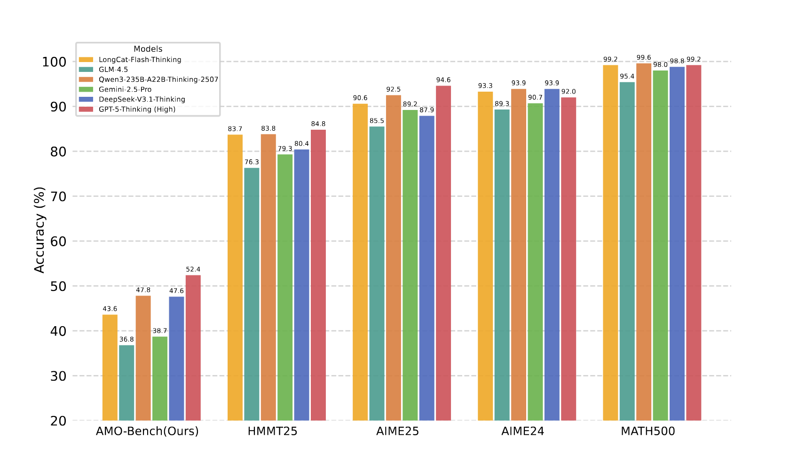

üìê AMO-Bench: Large Language Models
Still Struggle in High School Math Competitions
Abstract
We present AMO-Bench, an Advanced Mathematical reasoning benchmark with Olympiad level or even higher difficulty, comprising 50 human-crafted problems. Existing benchmarks have widely leveraged high school math competitions for evaluating mathematical reasoning capabilities of large language models (LLMs). However, many existing math competitions are becoming less effective for assessing top-tier LLMs due to performance saturation (e.g., AIME24/25). To address this, AMO-Bench introduces more rigorous challenges by ensuring all 50 problems are (1) cross-validated by experts to meet at least the International Mathematical Olympiad (IMO) difficulty standards, and (2) entirely original problems to prevent potential performance leakages from data memorization. Moreover, each problem in AMO-Bench requires only a final answer rather than a proof, enabling automatic and robust grading for evaluation. Experimental results across 26 LLMs on AMO-Bench show that even the best-performing model achieves only 52.4% accuracy on AMO-Bench, with most LLMs scoring below 40%. Beyond these poor performances, our further analysis reveals a promising scaling trend with increasing test-time compute on AMO-Bench. These results highlight the significant room for improving the mathematical reasoning in current LLMs. We release AMO-Bench to facilitate further research into advancing the reasoning abilities of language models.

Overview
This figure summarizes the AVG@32 performance of various leading LLMs, categorized by proprietary/open-source status and reasoning/non-reasoning properties. Even the highest performing model GPT-5-Thinking (High) reaches just 52.4%, while most others score below 40%. This indicates substantial room for improvement in complex reasoning abilities across all current language models. Moreover, both proprietary and open-source reasoning models occupy top ranks in the leaderboard, indicating that recent open-source advancements are closing the gap with leading commercial models.
Construction and Grading Pipeline
Construction pipeline: AMO-Bench have built up a comprehensive multi-stage construction pipeline that covers the entire process from question creation to final inclusion. This pipeline comprises four major stages: (1)Data creation, all problems are independently designed by mathematics experts from top universities and educational institutions. Beyond the final answer, each problem author must provide a detailed step-by-step solution. (2)Quality review, each candidate problem undergoes blind review by at least three experts to assess its quality. (3)Originality review, the originality review stage aims to ensure that these newly created problems are not mere rewrites of publicly available materials, but demonstrate genuine originality. (4)Difficulty review, we implement a difficulty review stage to filter out problems lacking adequate complexity, to ensure that AMO-Bench presents a sufficient challenge to state-of-the-art LLMs.
Grading Pipeline: AMO-Bench employs different grading approaches based on the specific answer type for each problem. For problems requiring numerical, set, or variable-expression answers (39 out of 50), we employ the parser-based grading. For problems requiring descriptive answers (11 out of 50), we use LLM-based grading with o4-mini (Low) serving as the grading model.

üèÜLeaderboardüèÜ
Here we present comprehensive evaluation results on VitaBench. Last updated on 2025-10-16.
For more detailed analysis, please refer to our paper on arXiv.
| Rank | Models | Cross-Scenarios | Delivery | In-store | OTA | ||||||||
|---|---|---|---|---|---|---|---|---|---|---|---|---|---|
| Avg@4 | Pass@4 | Pass^4 | Avg@4 | Pass@4 | Pass^4 | Avg@4 | Pass@4 | Pass^4 | Avg@4 | Pass@4 | Pass^4 | ||
| Thinking Models | |||||||||||||
| 1 |  o3 (high) o3 (high) | 30.0 | 61.0 | 6.0 | 53.5 | 83.0 | 24.0 | 53.5 | 86.0 | 19.0 | 37.8 | 66.0 | 10.0 |
| 2 |  Claude-4.1-Opus (w/ thinking) Claude-4.1-Opus (w/ thinking) | 29.0 | 56.0 | 6.0 | 47.5 | 80.0 | 17.0 | 52.5 | 78.0 | 20.0 | 32.3 | 57.0 | 9.0 |
| 3 | LongCat-Flash-Thinking | 24.3 | 54.0 | 3.0 | 42.3 | 71.0 | 13.0 | 56.8 | 85.0 | 25.0 | 28.3 | 59.0 | 6.0 |
| 4 |  Gemini-2.5-Pro Gemini-2.5-Pro | 23.5 | 53.0 | 5.0 | 49.0 | 81.0 | 16.0 | 43.8 | 78.0 | 12.0 | 26.5 | 54.0 | 6.0 |
| 5 | Claude-4-Sonnet (w/ thinking) | 23.0 | 51.0 | 6.0 | 46.0 | 78.0 | 15.0 | 51.5 | 80.0 | 21.0 | 29.0 | 55.0 | 9.0 |
| 6 | GPT-5 (high) | 22.8 | 51.0 | 3.0 | 54.0 | 85.0 | 23.0 | 52.5 | 86.0 | 21.0 | 37.5 | 64.0 | 16.0 |
| 7 | GLM-4.5 (w/ thinking) | 22.8 | 48.0 | 2.0 | 44.5 | 77.0 | 14.0 | 52.8 | 80.0 | 22.0 | 28.8 | 55.0 | 7.0 |
| 8 | o4-mini (high) | 19.5 | 49.0 | 1.0 | 44.5 | 80.0 | 15.0 | 46.5 | 81.0 | 15.0 | 23.5 | 50.0 | 5.0 |
| 9 |  Qwen3-235B-A22B-Thinking-2507 Qwen3-235B-A22B-Thinking-2507 | 18.8 | 45.0 | 2.0 | 44.0 | 78.0 | 9.0 | 46.0 | 80.0 | 9.0 | 17.5 | 41.0 | 2.0 |
| 10 |  Doubao-Seed-1.6-Thinking Doubao-Seed-1.6-Thinking | 17.0 | 42.0 | 1.0 | 30.3 | 59.0 | 10.0 | 43.3 | 78.0 | 10.0 | 18.0 | 45.0 | 2.0 |
| 11 |  DeepSeek-R1-0528 DeepSeek-R1-0528 | 14.5 | 39.0 | 0.0 | 40.3 | 72.0 | 11.0 | 41.3 | 79.0 | 7.0 | 13.0 | 32.0 | 2.0 |
| 12 | Gemini-2.5-Flash (think on) | 5.3 | 14.0 | 0.0 | 32.0 | 62.0 | 9.0 | 23.0 | 57.0 | 3.0 | 18.3 | 39.0 | 1.0 |
| 13 | Qwen3-32B (w/ thinking) | 5.0 | 24.0 | 0.0 | 22.8 | 53.0 | 4.0 | 26.5 | 60.0 | 3.0 | 7.3 | 18.0 | 1.0 |
| Non-thinking Models | |||||||||||||
| 1 | Claude-4.1-Opus (w/o thinking) | 21.8 | 47.0 | 3.0 | 46.0 | 78.0 | 13.0 | 53.8 | 85.0 | 21.0 | 30.8 | 60.0 | 9.0 |
| 2 | Claude-4-Sonnet (w/o thinking) | 21.3 | 49.0 | 4.0 | 39.0 | 69.0 | 17.0 | 46.3 | 78.0 | 10.0 | 25.0 | 49.0 | 7.0 |
| 3 | LongCat-Flash-Chat | 20.3 | 45.0 | 2.0 | 39.5 | 71.0 | 15.0 | 50.5 | 84.0 | 15.0 | 22.8 | 49.0 | 2.0 |
| 4 | GLM-4.5 (w/o thinking) | 20.0 | 47.0 | 1.0 | 45.8 | 72.0 | 20.0 | 48.3 | 82.0 | 13.0 | 20.3 | 45.0 | 2.0 |
| 5 | Qwen3-Max | 18.5 | 47.0 | 3.0 | 37.2 | 71.0 | 7.0 | 49.7 | 84.0 | 12.0 | 27.5 | 55.0 | 9.0 |
| 6 | DeepSeek-V3.2-Exp (w/o thinking) | 17.7 | 41.0 | 2.0 | 36.2 | 66.0 | 10.0 | 43.8 | 79.0 | 11.0 | 18.8 | 45.0 | 1.0 |
| 7 | DeepSeek-V3.1 (w/o thinking) | 16.3 | 40.0 | 1.0 | 34.0 | 67.0 | 6.0 | 42.5 | 76.0 | 7.0 | 18.3 | 47.0 | 1.0 |
| 8 |  Kimi-K2-0905 Kimi-K2-0905 | 15.5 | 39.0 | 2.0 | 35.3 | 68.0 | 9.0 | 42.5 | 78.0 | 10.0 | 22.0 | 46.0 | 4.0 |
| 9 | Qwen3-235B-A22B-Instruct-2507 | 14.3 | 38.0 | 0.0 | 34.3 | 66.0 | 6.0 | 44.8 | 87.0 | 13.0 | 20.0 | 45.0 | 1.0 |
| 10 | GPT-4.1 | 13.8 | 35.0 | 0.0 | 37.8 | 67.0 | 11.0 | 42.5 | 71.0 | 17.0 | 19.8 | 42.0 | 1.0 |
| 11 | Doubao-Seed-1.6 | 10.5 | 29.0 | 0.0 | 37.8 | 65.0 | 12.0 | 39.5 | 73.0 | 9.0 | 18.8 | 39.0 | 3.0 |
| 12 | Gemini-2.5-Flash (think off) | 5.8 | 17.0 | 1.0 | 31.0 | 65.0 | 6.0 | 22.8 | 46.0 | 3.0 | 18.5 | 44.0 | 1.0 |
| 13 | Qwen3-32B (w/o thinking) | 4.0 | 12.0 | 0.0 | 16.5 | 37.0 | 3.0 | 21.3 | 47.0 | 2.0 | 3.0 | 11.0 | 0.0 |
| 14 | GPT-5 (minimal) | 4.0 | 9.0 | 0.0 | 30.0 | 64.0 | 6.0 | 27.0 | 60.0 | 2.0 | 7.8 | 22.0 | 0.0 |
| 15 | DeepSeek-V3-0324 | 3.8 | 12.0 | 0.0 | 25.3 | 53.0 | 5.0 | 34.3 | 71.0 | 5.0 | 10.3 | 26.0 | 1.0 |
1We will periodically refresh the dataset by correcting errors, replacing outdated samples, and adding new challenging tasks. All leaderboard metrics are updated concurrently to reflect these changes.
2Due to API stability concerns, we are currently unable to evaluate some models for this benchmark. We are actively working to address these issues and to include the latest models.
3While the tasks are grounded in real-world life-serving platforms where the majority of data is originally in Chinese, we are also preparing an English version of the dataset to facilitate broader research use.
BibTeX
@article{he2025vitabench,
title={VitaBench: Benchmarking LLM Agents with Versatile Interactive Tasks in Real-world Applications},
author={He, Wei and Sun, Yueqing and Hao, Hongyan and Hao, Xueyuan and Xia, Zhikang and Gu, Qi and Han, Chengcheng and Zhao, Dengchang and Su, Hui and Zhang, Kefeng and Gao, Man and Su, Xi and Cai, Xiaodong and Cai, Xunliang and Yang, Yu and Zhao, Yunke},
journal={arXiv preprint arXiv:2509.26490},
year={2025}
}